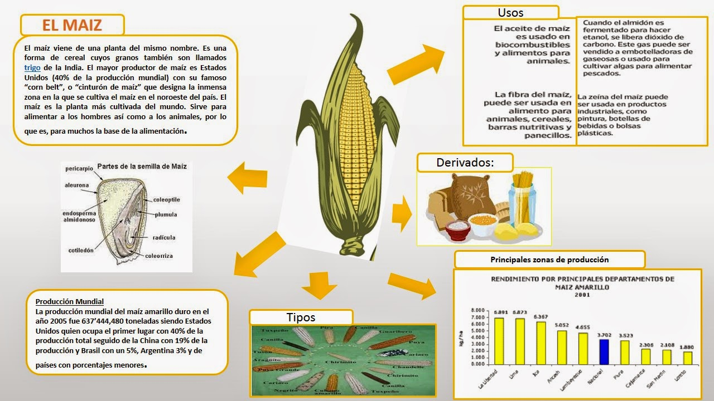

¿Qué es el maíz?
El maíz es fundamental en la alimentación y la economía de México. Se utiliza para producir una gran variedad de productos. En 2017, Bolivia importó 79.7 millones de kg de maíz, con Argentina como principal proveedor, seguido de Brasil, México, Chile y Estados Unidos.